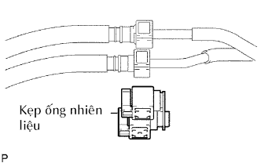

HỆ THỐNG NHIÊN LIỆU > LƯU Ý |
| 1.XẢ ÁP SUẤT CỦA HỆ THỐNG NHIÊN LIỆU |
Ngắt cáp ra khỏi cực âm của ắc quy.
Hãy tháo tấm ốp bậu cửa bên phía người lái.
Dùng một tô vít, nhả khớp 7 vấu.
Dùng một dụng cụ tháo kẹp, nhả khớp 3 kẹp và tháo tấm ốp bậu cửa.
 |
Hãy lật thảm trải sàn và ngắt cút nối ra, như được chỉ ra trên hình vẽ.
Ngắt cáp ra khỏi cực âm của ắc quy.
Khởi động động cơ. Sau khi động cơ tự chết máy, hãy tắt khoá điện OFF.
Quay khởi động động cơ một lần nữa và sau đó kiểm tra rằng động cơ không thể nổ được máy.
Nới lỏng nắp bình nhiên liệu và sau đó xả áp suất bình nhiên liệu hoàn toàn.
Nối giắc của bơm nhiên liệu.
Hãy lắp tấm ốp bậu cửa bên phía người lái.
Xoá các mã DTC (Xem trang Kích chuột vào đây).
| 2.HỆ THỐNG NHIÊN LIỆU |
Khi ngắt đường ống nhiên liệu cao áp, một lượng lớn xăng có thể phun ra. Hãy tuân theo các quy trình sau đây.
Xả áp suất hệ thống nhiên liệu (xem quy trình trên).
Đặt một khay hứng dưới chỗ nối.
Ngắt ống của bơm nhiên liệu.
Xả nhiên liệu còn lại bên trong ra khỏi ống của bơm nhiên liệu.
Để bảo vệ ống của bơm nhiên liệu vừa tháo ra khỏi bị hỏng hoặc dính bụi, hãy bọc nó bằng túi ni lông.
Hãy tuân theo các lưu ý sau đây khi tháo và lắp vòi phun nhiên liệu.
Không bao giờ dùng lại các gioăng chữ O.
Khi đặt một gioăng chữ O mới lên vòi phun, cẩn thận đừng làm hỏng nó với bất cứ hình thức nào.
Bôi mỡ hoặc xăng lên các gioăng chữ O mới trước khi lắp. Không bao giờ được dùng dầu động cơ, dầu bánh răng hoặc dầu phanh.
Lắp vòi phun vào ống phân phối và nắp quy lát, như được chỉ ra trên hình vẽ. Trước khi lắp vòi phun, chắc chắn đã bôi mỡ hoặc xăng lên vị trí mà ống phân phối tiếp xúc với gioăng chữ O của vòi phun.
Hãy tuân theo các lưu ý sau đây khi tháo cút nối ống nhiên liệu (Cút nối nhanh).
Kiểu nắp của cút nối ống nhiên liệu:
Nhả khớp vấu hãm bằng cách nhấc nắp, như được chỉ ra trên hình vẽ.
|  |
Kiểu kẹp ống nhiên liệu:
Tháo kẹp ống nhiên liệu ra khỏi cút nối ống nhiên liệu.
Kiểm tra cặn bẩn hoặc bùn trên ống và xung quanh chỗ nối trước khi ngắt ống ra. Hãy lau sạch nếu cần thiết.
 |
Nếu cút nối và ống kẹt với nhau, hãy nhả cút nối, ấn và kéo ống để ngắt ống và kéo nó ra.
Kiểm tra cặn bẩn hoặc bùn trên bề mặt làm kín của ống đã được ngắt ra. Hãy lau sạch nếu cần thiết.
 |
Để bảo vệ ống và cút nối khỏi bị hỏng hoặc dính bụi, hãy bọc nó bằng túi ni lông.
 |
Hãy tuân theo các lưu ý sau đây khi lắp cút nối ống nhiên liệu (cút nối nhanh).
Kiểm tra rằng không có hư hỏng hoặc vật thể lạ bám vào chỗ nối ống.
Gióng thẳng trục của cút nối với trục của ống. Hãy đẩy ống vào cút nối cho đến khi cút nối phát ra tiếng kêu “tách”. Nếu chỗ nối bám chặt, hãy bôi một ít dầu động cơ sạch vào đầu ống.
 |
Sau khi đã thực hiện xong việc nối ống, thử kéo tách ống và cút nối và xác nhận rằng nó đã được nối chắc chắn.
Kiểu kẹp ống nhiên liệu:
Lắp kẹp ống nhiên liệu vào cút nối.
Kiểu nắp của cút nối ống nhiên liệu:
Cài các vấu hãm vào cút nối bằng cách ấn nắp xuống, như được chỉ ra trên hình vẽ.
Kiểm tra rằng không có rò rỉ nhiên liệu.
| 3.KIỂM TRA RÒ RỈ NHIÊN LIỆU |
Kiểm tra rằng không có rò rỉ nhiên liệu trong bất cứ chỗ nào của hệ thống nhiên liệu sau khi tiến hành bảo dưỡng. (Xem trang Kích chuột vào đây).